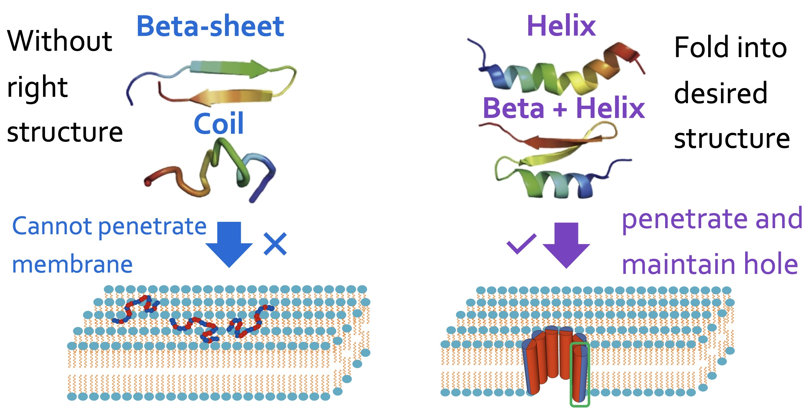
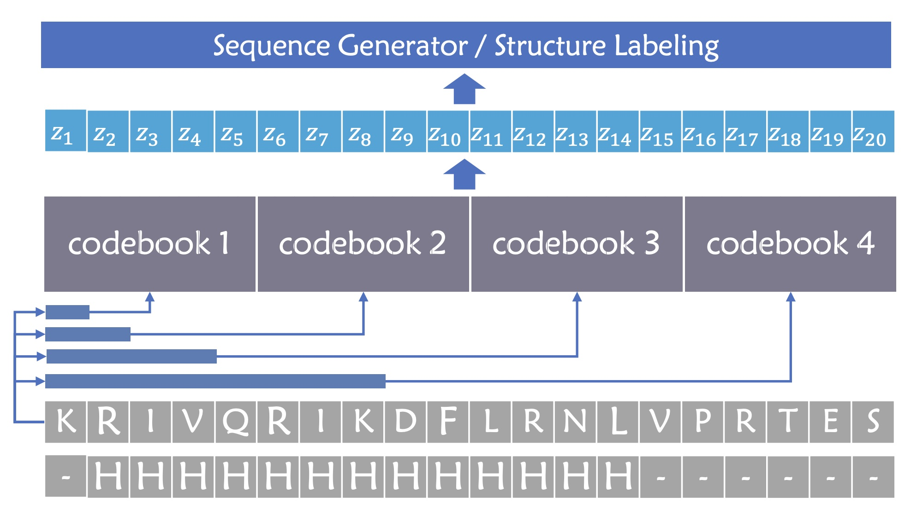
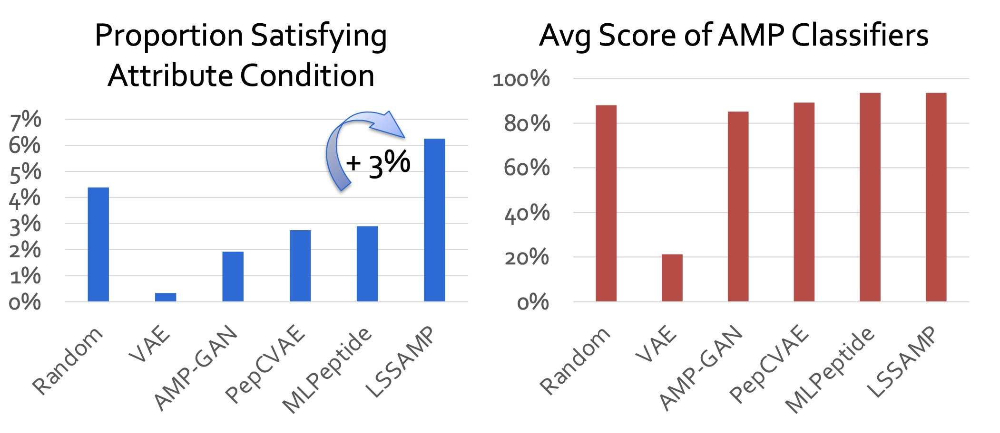
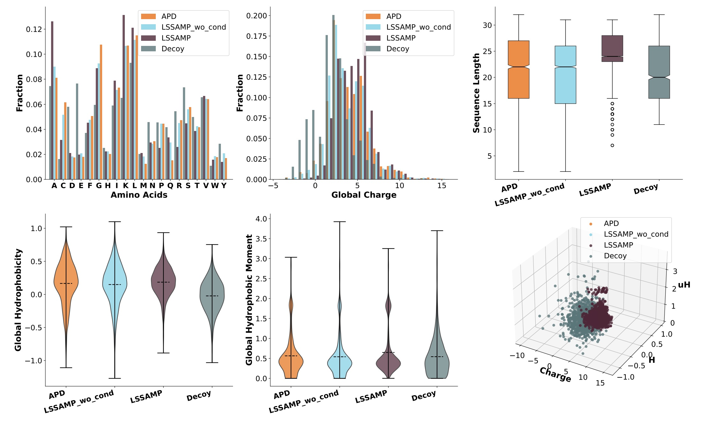

Secondary structures are important to biological functions such as antimicrobial activities.

Model Overview. Here, we use 𝑁 = 4 pattern selectors to select local patterns with different scales and use the corresponding codebooks to obtain discrete latent variables 𝑧𝑖 for each position.

Generated peptides verified with antimicrobial activities in wet laboratory

LSSAMP outperforms baselines in biological attributes and comparable in AMP classifiers
